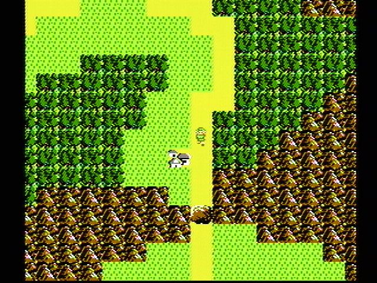

Project 3: Build Your Own World
Required lectures: None in particular, but the optional Software Engineering lectures will be helpful in learning how to manage the complex and collaborative nature of this project.
Deadlines
| Assignment | Tasks | Deliverable | Points | Due Date |
|---|---|---|---|---|
| Team Formation | - Task 0: Partnerships | Pre-Project Google Form | 5 | Mon, Nov 11 11:59pm PT |
| Project 3A | - Task 1: Setup - Task 2: World Generation |
World Screenshots on Gradescope | 10 | Mon, Nov 18 11:59pm PT |
| Mid-Project Google Form | 5 | |||
| Project 3B | - Task 3: Main Menu - Task 4: Interactivity - Task 5: Saving and Loading - Task 6: Ambition Features |
Code on Gradescope (0 pts, but required for checkoff) |
0 | Tue, Nov 26 11:59pm PT |
| Live Checkoff with TA (Checkoffs will happen Dec 2–6) |
100 | |||
| Post-Project Google Form | 5 |
Welcome
In Project 3, you will create an engine for generating explorable worlds. This is a large design project that will require you and one partner to work through every stage of development from ideation to presentation. The goal of this project is to teach you how to handle a larger piece of code with little starter code in the hopes of emulating something like a product development cycle. In accordance with this, the grading of this project will be different from other projects. Since there is no notion of “the correct answer” when it comes to world design and implementation, you will be assessed much like a performance review you might receive at an internship or job in addition to a very general autograder. While this means you will be graded slightly subjectively, we promise to be pretty nice bosses and will respect you as any boss should respect their hardworking employees. Please talk to us if you feel the grading scheme feels unfair.
This project will require you a great deal of exploration and experimentation. Searching the web for answers (not solutions from past semesters) should be a regular activity throughout this process. Please know that there are no right and wrong answers, as this is a very open-ended project. However, there are some implementations and ideas that are better than others. It is ok and expected that you will go through several iterations before settling on something that you deem good. That is, this project is about software engineering.
You’re not required to use any of the fancy data structures or concepts from class (A*, MSTs, Disjoint Sets, etc.). This project is about software engineering, not about data structures or algorithms. The data structures and algorithms we’ve learned about in class will make your code significantly simpler and more efficient, but please don’t use things just because we learned about them in class. Only use these tools if you feel comfortable using them in your implementation.
A walkthrough of the new skeleton code is also available here. This is also from a past semester, so some terms may be outdated (e.g. “Phase 1” is now “Project 3A”).
Overview
Your task for the next few weeks is to design and implement a 2D tile-based world exploration engine. By “tile-based”, we mean the worlds you generate will consist of a 2D grid of tiles. By “world exploration engine” we mean that your software will build a world, which the user will be able to explore by walking around and interacting with objects in that world. Your world will have an overhead perspective. As an example of a much more sophisticated system than you will build, the NES game “Zelda II” is (sometimes) a tile based world exploration engine that happens to be a video game:

The system you build can either use graphical tiles (as shown above), or it can use text based tiles, like the game shown below:

We will provide a tile renderer and a small set of starter tiles for you to use.
Your roadmap for this project:
- First, you’ll implement code to generate random worlds.
- Then, you’ll add a main menu for the user to start the game from.
- Then, you’ll add support for saving a game and loading it back.
- Finally, you’ll get a chance to add any extra fun features to your project.
This is our suggested order for working on the project, but since it’s a design project with no starter code, you can work on these features in any order you’d like!
The major goal of this project is to give you a chance to attempt to manage the complexity that comes with building a large system. Be warned: The system you build probably isn’t going to be that fun for users! Three weeks is simply not enough time, particularly for novice programmers. However, we do hope you will find it to be a fulfilling project, and the worlds you generate might even be beautiful.
Large Language Model (LLM) Policy
Recall that in the collaboration policy, we say:
“Use of GitHub Copilot / GPT3 / etc. is permitted with extreme caution if you’re just generating some amount of boilerplate code, that’s ok. However, you should not use such tools to generate non-trivial methods. We are trying to build your fundamental skills, and leaning on an AI is going to cause you trouble in circumstances where you don’t have an AI to help, such as exams. Any AI generated code must be cited and explicitly commented as such.”
For Task 6 (Ambition Features) only, we’re relaxing this rule. It’s okay to use large language models (LLMs) like ChatGPT, Bard, Bing, CoPilot, etc. however you want, but you must explicitly cite any AI usage.
Warning: To cite AI usage, you need to write down exactly what code generator you used (e.g. ChatGPT), and write down steps to reproduce the code you generated (e.g. the prompts you entered into the generator). Leaving detailed comments in the code is sufficient for citing your AI usage. Un-cited or improperly-cited usage of AI will be treated as academic misconduct.
Warning: Course staff reserves the right to revoke this policy if you’ve violated course policies on previous assignments, or on other non-Task 6 parts of this project.
If you want LLMs to be useful for Task 6, you’re going to want to give them small tasks. You should think of LLMs as assistant programmers you’ve hired to help you out on your project — they’re very fast and sloppy programmers who have little common sense, and they often need very specific directions to be useful.
If you give high level prompts like write a “write a lighting engine for my game with the code below”, it’s going to do badly. Prompts like “write a function that takes a Color and a brightness level and returns a new color with the given brightness” are really great use cases for LLMs.
Note: LLMs are notorious for confidently stating things that are not true. They don’t have any actual understanding, and the code they generate may be buggy or even totally garbage.
Another possible use for LLMs is for debugging! I’ve occasionally given an LLM some code, described my issue, and it’s been able to figure out what was wrong.
Warning: As a reminder, the relaxed LLM policy applies to Task 6 only. The original policy (only use for trivial methods) still applies for all other tasks.